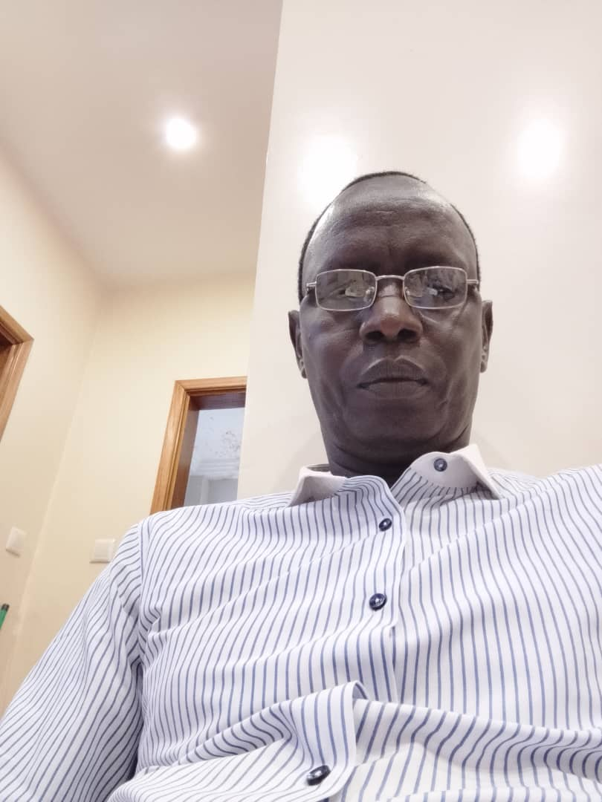

Aliou Kébé : Un professionnalisme et une rigueur exemplaires
Publié le 22 août 2026

Dans un paysage médiatique en constante évolution, le rôle d'un journaliste engagé et rigoureux est fondamental pour éclairer le citoyen. Aliou Kébé s'impose aujourd'hui comme une figure incontournable de cette presse exigeante.
Reconnu pour son intégrité et sa grande maîtrise du terrain, Aliou Kébé incarne cette noble vision du journalisme : celle qui recherche avant tout l'exactitude des faits et la pertinence de l'analyse.
« Informer avec justesse, analyser avec impartialité : telle est la marque de fabrique du travail de terrain d'Aliou Kébé. »
La rédaction de Sénégal 24 salue son parcours, son dévouement et son apport précieux au monde de la communication et des médias au Sénégal.